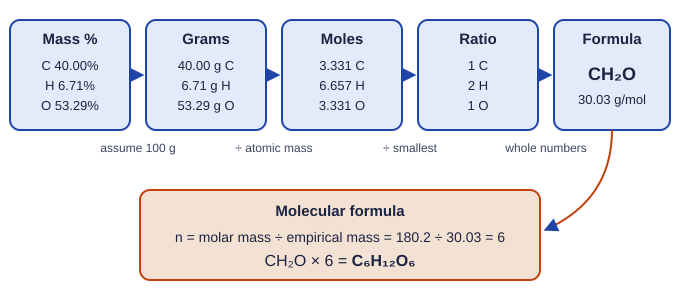

Pure substances have a fixed recipe
A pure substance has the same composition all the way through and from sample to sample. Elements are pure substances, and so are compounds. Water from a glacier, a lab bottle or a kettle is always two hydrogen atoms for every oxygen atom.
Because the atom ratio is fixed and each kind of atom has a fixed mass, the ratio of masses is fixed too. This is the law of definite proportions: a given compound always contains its elements in the same proportions by mass. Every sample of pure water is 11.2% hydrogen and 88.8% oxygen by mass, whether it is a drop or an ocean.
The atom ratio is written in a chemical formula: element symbols with subscripts that count atoms. In C₆H₁₂O₆ there are 6 carbon, 12 hydrogen and 6 oxygen atoms per molecule. A subscript of 1 is not written.
Mass percent
The mass percent of an element is its share of the compound's mass. From a formula:
mass percent = (mass of the element in one mole of the compound ÷ molar mass of the compound) × 100
Worked example. What is the mass percent of nitrogen in urea, CH₄N₂O? (C 12.01, H 1.008, N 14.01, O 16.00)
Molar mass: 12.01 + 4(1.008) + 2(14.01) + 16.00 = 60.06 g/mol.
Nitrogen in one mole: 2 × 14.01 = 28.02 g. Use the subscript.
Mass percent N = (28.02 g ÷ 60.06 g) × 100 = 46.65%.
Mass percents can also come from an experiment: weigh a sample and the mass of one element in it. The mass percent then works as a conversion factor. If magnesium oxide is 60.32% Mg, then 12.5 g of it holds 12.5 × 0.6032 = 7.54 g of Mg.
Why mass ratios are not atom ratios
In magnesium oxide, 1.216 g of Mg combines with 0.800 g of O. The mass ratio is about 1.5 : 1, yet the formula is MgO, a 1 : 1 atom ratio. The reason is that a magnesium atom (24.31 amu) is heavier than an oxygen atom (16.00 amu). To compare numbers of atoms, convert each mass to moles: 1.216/24.31 = 0.05002 mol Mg and 0.800/16.00 = 0.0500 mol O. Equal moles, equal numbers of atoms: MgO.
Empirical formulas
The empirical formula is the simplest whole-number ratio of atoms in a compound. It is what mass data can tell you directly (Figure 1).

- If you have percents, assume a 100 g sample, so each percent becomes grams.
- Convert each mass to moles with the atomic mass.
- Divide every mole value by the smallest one.
- If a ratio is not close to a whole number, multiply all of them by the small whole number that clears it: ×2 for a ratio ending in .5, ×3 for .33 or .67, ×4 for .25 or .75.
- Write the ratios as subscripts.
Worked example. A sweet-tasting white solid is 40.00% C, 6.71% H and 53.29% O by mass. Find its empirical formula.
In 100 g: 40.00 g C, 6.71 g H, 53.29 g O.
Moles: C 40.00/12.01 = 3.331 mol; H 6.71/1.008 = 6.657 mol; O 53.29/16.00 = 3.331 mol.
Divide by the smallest (3.331): C 1.000, H 1.999, O 1.000.
Empirical formula: CH₂O.
Worked example. 2.233 g of iron reacts with oxygen to give 3.193 g of an iron oxide. Find the empirical formula.
Mass of O gained: 3.193 − 2.233 = 0.960 g.
Moles: Fe 2.233/55.85 = 0.03998 mol; O 0.960/16.00 = 0.0600 mol.
Divide by the smallest: Fe 1.00, O 1.50. A ratio ending in .5 means multiply by 2: Fe 2, O 3.
Empirical formula: Fe₂O₃. Rounding 1.5 to 1 or 2 would give a compound that does not match the data.
Molecular formulas
The molecular formula gives the actual number of each atom in one molecule. It is always a whole-number multiple, n, of the empirical formula. Several different compounds can share one empirical formula: CH₂O (formaldehyde), C₂H₄O₂ (acetic acid, in vinegar) and C₆H₁₂O₆ (glucose) all have the same mass percents. Mass data alone cannot tell them apart; the molar mass can.
n = molar mass of the compound ÷ molar mass of the empirical formula
Worked example. The compound with empirical formula CH₂O has a molar mass of 180.2 g/mol. What is its molecular formula?
Empirical formula mass: 12.01 + 2(1.008) + 16.00 = 30.03 g/mol.
n = 180.2 ÷ 30.03 = 6.00.
Multiply every subscript by 6: C₆H₁₂O₆, glucose.
Using data to check a claim
The law of definite proportions gives a quick test of lab results. If three groups each make magnesium oxide from different amounts of magnesium, their products should all be about 60.3% Mg. A result well above that (say 66%) means the product was too light for the magnesium used: most likely some magnesium did not react with oxygen. A result below it means extra mass, such as moisture absorbed by the product. Saying which way an error pushes the result is a skill the free-response section rewards.